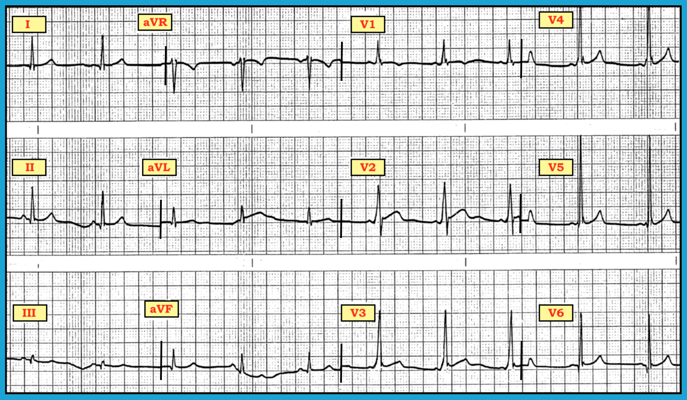
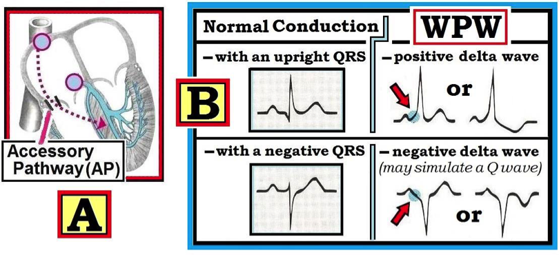
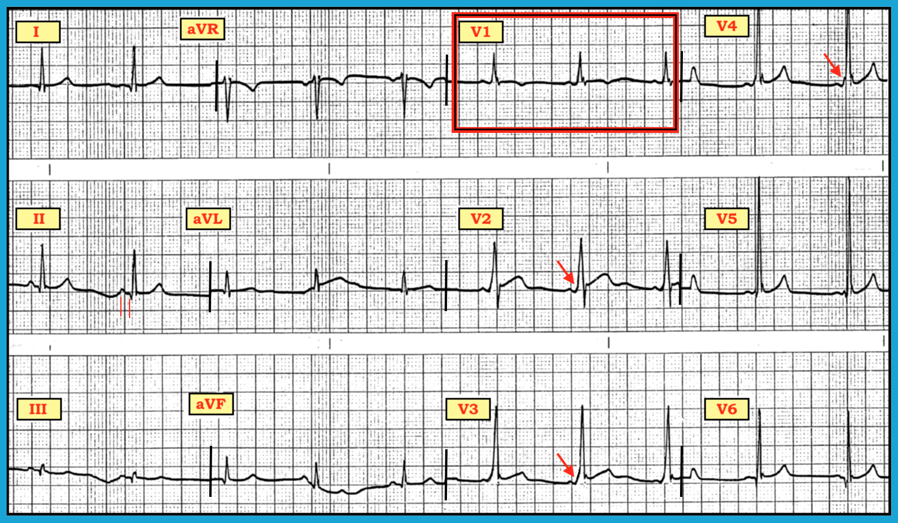

ECG Blog #153 (LVH – RVH – WPW – RBBB)
Điện tâm đồ ở Hình-1 được ghi ở một nam giới 39 tuổi, ngoài ra khỏe mạnh và hoàn toàn không triệu chứng, trong đợt khám sức khỏe trước tuyển dụng.
- Bạn đọc điện tâm đồ này như thế nào?
- Có RVH không? Có LVH không?
- Bạn sẽ tư vấn cho bệnh nhân này ra sao?


DIỄN GIẢI: Cách tiếp cận hệ thống của chúng tôi với điện tâm đồ này như sau:
- Tần số & Nhịp — Nhịp xoang bình thường, tần số ~60-65/phút. Đáng tiếc là không có dải nhịp chuyển đạo dài ở cuối bản ghi này. Tuy nhiên, sóng P có dương ở chuyển đạo II với khoảng PR không đổi — và điều này xác định nhịp là nhịp xoang.
- Các khoảng —Khoảng PR có vẻ ngắn (tức là thời gian dưới 0.12 giây). Quan sát phức bộ QRS ở cả 12 chuyển đạo gợi ý có thể QRS hơi giãn rộng (nhất là ở chuyển đạo V2 và V3). Có vẻ có trát đậm ở phần đầu của phức bộ QRS ở một số chuyển đạo trước tim.
- Trục — N/A (Không áp dụng) — dựa trên những gì chúng ta vừa mô tả ...
- Lớn các buồng tim — N/A (Xem bên dưới).
- Thay đổi Q-R-S-T — N/A (Xem bên dưới).
- NHẬN ĐỊNH LÂM SÀNG — NSR ( = nhịp xoang bình thường – Normal Sinus Rhythm) kèm WPW. Chúng tôi nhấn mạnh rằng việc nhận ra WPW trong ca này rất tinh tế — và rất dễ bỏ sót!
BÌNH LUẬN: Bệnh nhân này biểu hiện hội chứng WPW (Wolff-Parkinson-White) — trong đó có một hay nhiều đường phụ cho phép xung điện đi theo một đường thay thế từ tâm nhĩ xuống tâm thất. Như vậy, với WPW — các xung xoang đi tắt qua nút AV nhờ một AP (đường phụ – Accessory Pathway) — và do đó đến tâm thất sớm (Ô A trong Hình-2).


Nhận diện WPW trên điện tâm đồ: Thường dễ nhận ra WPW trên điện tâm đồ nền khi dẫn truyền đi hoàn toàn qua AP (đường phụ – Accessory Pathway). Có 3 đặc điểm điện tâm đồ cần tìm (Ô B trong Hình-2):
- Sóng delta.
- Khoảng PR ngắn.
- QRS giãn rộng.
Sóng Delta: Sóng delta được nhận ra dưới dạng một biến dạng ở phần đầu của phức bộ QRS. Nó xuất hiện do xung điện đi tắt qua nút AV — và đến tâm thất trực tiếp nhờ dẫn truyền qua đường phụ.
- Sóng delta có thể hướng lên (dương) hoặc hướng xuống (âm) — tùy vị trí của AP trong tim. Khi sóng delta âm — chúng có thể giống sóng Q của nhồi máu cơ tim (Ô B trong Hình-2):
- Những điểm CHÍNH: Ngay cả khi dẫn truyền đi hoàn toàn qua AP — sóng delta không phải lúc nào cũng thấy ở mọi chuyển đạo. Hơn nữa, sóng delta có thể lúc có lúc không — vì dẫn truyền qua AP có thể từng lúc. Đôi khi — dẫn truyền có thể xảy ra đồng thời qua cả đường bình thường lẫn đường phụ. Khi đó — các đặc điểm điện tâm đồ của WPW có thể rất tinh tế, vì phần đóng góp từ dẫn truyền qua đường nút AV bình thường có thể chiếm ưu thế (và nhờ đó che lấp) các đặc điểm điện tâm đồ của tiền kích thích.
Khoảng PR ngắn: Lý do khoảng PR ngắn trong WPW — là vì nút AV bị đi tắt. Với dẫn truyền bình thường trong nhịp xoang — xung điện chậm lại khi đi qua nút AV trên đường xuống tâm thất. Vì vậy — phần lớn khoảng PR bình thường là thời gian xung cần để đi qua nút AV. Trong WPW, xung điện đến tâm thất sớm hơn — vì sự chậm trễ tương đối thường gặp khi đi qua nút AV được tránh khỏi nhờ dẫn truyền qua AP.
QRS giãn rộng: QRS giãn rộng trong WPW — vì sau khi xung đến tâm thất (nhờ dẫn truyền qua AP) — nó phải lan qua mô cơ tim không biệt hóa cho tới khi gặp được bất kỳ phần xa nào của hệ thống dẫn truyền chưa khử cực. Do đó sóng delta có thể kéo dài 0.04 giây hoặc hơn (phản ánh dẫn truyền chậm qua mô cơ tim không biệt hóa). Khi biến thiên của sóng delta được cộng thêm vào phần còn lại của phức bộ QRS — kết quả là một phức bộ giãn rộng.
ĐIỀU CỐT LÕI về nhận diện trên điện tâm đồ: Có nhiều biến thể của chủ đề trên. Hãy nhớ những điều sau:
- WPW không phổ biến trong dân số chung. Tỷ lệ mắc ước tính ~2 trên 1,000 người. Chừng đó cũng đủ thường gặp để hầu như mọi nhân viên y tế làm việc với điện tâm đồ ít nhất thỉnh thoảng sẽ gặp hội chứng này.
- Khi một bệnh nhân WPW đang dẫn truyền qua đường phụ — bạn có thể chẩn đoán WPW bằng cách nhận ra 3 đặc điểm điện tâm đồ sau ở ít nhất một số chuyển đạo trên điện tâm đồ 12 chuyển đạo: i) QRS giãn rộng; ii) sóng delta; và, iii) khoảng PR ngắn. Một khó khăn trong chẩn đoán là tiền kích thích (tức là dẫn truyền WPW qua một AP) có thể từng lúc. Vì vậy, một điện tâm đồ nào đó có thể không cho thấy dấu hiệu gì là bệnh nhân có WPW nếu dẫn truyền đi hoàn toàn (hoặc gần như hoàn toàn) qua đường nút AV bình thường vào lúc ghi bản ghi.
- LƯU Ý về ca này: Chính vì tiền kích thích không hoàn toàn nên chẩn đoán WPW ở Hình-1 khó đến vậy. Ngoài khoảng PR hơi ngắn — không có mấy điểm bất thường ở các chuyển đạo chi. Sóng delta rõ ràng chỉ thấy ở các chuyển đạo V1, V2, V3 và V4.
Tầm quan trọng lâm sàng của WPW: Có 2 lý do chính khiến việc nhận ra WPW là quan trọng:
- Lý do #1: WPW thường đi kèm rối loạn nhịp tim — phần lớn là do có sẵn một đường phụ (AP) tạo điều kiện cho các nhịp nhanh vào lại và dẫn truyền cực nhanh khi rung nhĩ hoặc cuồng nhĩ. May mắn là đại đa số bệnh nhân WPW có tiên lượng lâu dài rất tốt — và tỷ lệ đột tử chung của hội chứng này cực kỳ thấp. Tuy vậy, các rối loạn nhịp liên quan WPW có thể đe dọa tính mạng — vì tần số cực nhanh (trên 250/phút) có thể xảy ra nếu bệnh nhân WPW bị AFib hoặc AFlutter. Những tần số quá nhanh này có thể khiến nhịp chuyển xấu thành VFib.
- Lý do #2: WPW thường được xem là “Kẻ bắt chước vĩ đại” của các tình trạng khác. Việc QRS giãn rộng kèm các thay đổi tái cực thứ phát ở ST-T có thể tạo nên hình ảnh điện tâm đồ giống RBBB, LBBB, IVCD, LVH, RVH và/hoặc nhồi máu cơ tim hay thiếu máu cục bộ.
- LƯU Ý về ca này: Phức bộ QRS dương và hơi giãn rộng ở chuyển đạo V1 của Hình-1 giống RBBB và RVH. Biên độ QRS tăng rõ ở chuyển đạo V5 giống LVH. Tuy vậy, không tình trạng nào trong số này chẩn đoán được trên điện tâm đồ — vì bệnh nhân này có WPW! Do đó, từ điện tâm đồ này chúng ta không thể biết liệu có kèm lớn thất hay blốc nhánh trong ca này hay không.
Làm sao để không bỏ sót chẩn đoán WPW?
Như đã nhấn mạnh, việc nhận ra WPW trong ca này có thể dễ bị bỏ sót — vì tiền kích thích không hoàn toàn. Tuy vậy — tuân thủ nghiêm ngặt một Cách tiếp cận hệ thống khi đọc điện tâm đồ lẽ ra đã giúp bạn phát hiện chẩn đoán WPW trong ca này bằng ít nhất một trong 3 cách (Hình-3):
- Khoảng PR ở chuyển đạo II ngắn (dưới 0.12 giây). Tuy người bình thường đôi khi có PR hơi ngắn — nhận ra khoảng PR ngắn cần khiến bạn tìm kỹ các sóng delta tinh tế (mũi tên ĐỎ trong Hình-3).
- Một số chuyển đạo ngực trong Hình-3 gợi ý phức bộ QRS có ít nhất hơi giãn rộng. Hãy nhớ: Thời gian của một khoảng được đánh giá ở chuyển đạo nào trong 12 chuyển đạo cho khoảng dài nhất — và phức bộ QRS ở chuyển đạo V3 có vẻ kéo dài hơn nửa ô lớn.
- Đánh giá thay đổi Q-R-S-T: Lưu ý vùng chuyển tiếp ở các chuyển đạo ngực xảy ra sớm — vì phức bộ QRS đã dương hoàn toàn ở chuyển đạo V1 (trong hình chữ nhật ĐỎ)! Nhận ra sóng R cao ở chuyển đạo V1 cần khiến bạn ngay lập tức nghĩ tới các nguyên nhân thường gặp của dấu hiệu điện tâm đồ này. WPW là một trong các nguyên nhân đó! (Xin xem ECG Blog #81).


Bạn sẽ tư vấn cho bệnh nhân này thế nào? Điều quan trọng cần nhớ là người đàn ông 39 tuổi trong ca này vẫn khỏe mạnh — và hoàn toàn không có triệu chứng. NẾU bệnh nhân này có tiền sử triệu chứng gợi ý các đợt rối loạn nhịp tim — chuyển khám bác sĩ tim mạch chuyên về điện sinh lý (EP) rõ ràng là có chỉ định. Nhưng anh ấy không có triệu chứng!
- Về lâm sàng — Rất đáng để quay lại và hỏi lại bệnh nhân này xem anh ấy đã từng có triệu chứng nào có thể liên quan tới rối loạn nhịp tim hay chưa. Nếu hỏi theo kiểu câu hỏi mở — một số đáng kể bệnh nhân khi đó sẽ nhớ ra các đợt có triệu chứng. Có thể hỏi như sau: “Anh có từng có những đợt kéo dài từ 15 phút trở lên, trong đó anh thấy chóng mặt, hoặc thấy tim đập thình thịch mạnh trong ngực không?” Nhớ hỏi cụ thể về các đợt ngất (hoặc tiền ngất) trong khi gắng sức. Trả lời có với bất kỳ câu hỏi nào trong số này đều đáng được đánh giá thêm.
- Vào năm 2018 — chuyển bệnh nhân theo chương trình để làm RFCA (triệt đốt qua ống thông bằng sóng có tần số radio – Radio-Frequency Catheter Ablation) đã trở thành một thủ thuật chuẩn, với tỷ lệ thành công cao, có thể “chữa khỏi” các rối loạn nhịp liên quan WPW. Tại các trung tâm có uy tín với bác sĩ tim mạch điện sinh lý giàu kinh nghiệm — triệt đốt AP qua ống thông hiệu quả nói chung đạt được ở >95-98% số ca, với tỷ lệ biến chứng dưới 5%. Phần lớn biến chứng là tạm thời, nhưng đôi khi có thể xảy ra blốc AV hoàn toàn. Vì vậy, mặc dù thăm dò điện sinh lý (EP) và các thủ thuật triệt đốt ngày càng an toàn — chúng không hoàn toàn vô hại. Cân nhắc với tiên lượng nhìn chung thuận lợi của đa số bệnh nhân WPW — phân tầng nguy cơ và mong muốn của bệnh nhân giữ vai trò nổi bật trong quá trình ra quyết định.
- Nguy cơ xuất hiện rối loạn nhịp có triệu chứng ở bệnh nhân WPW thay đổi theo tuổi. Ở nhiều bệnh nhân, khả năng tiền kích thích thất mất dần theo thời gian. Vì vậy, nguy cơ xuất hiện rối loạn nhịp ác tính thấp hơn đáng kể ở bệnh nhân WPW không triệu chứng trên 35-40 tuổi, so với nguy cơ ở người trẻ tuổi và trẻ em.
- Vào năm 2018 — phát hiện WPW trên điện tâm đồ của một trẻ nhũ nhi hay trẻ em không triệu chứng là lý do để chuyển khám bác sĩ tim mạch nhi. Một nhóm khác cũng cần chuyển khám gồm các vận động viên thi đấu ở tuổi thiếu niên và người trẻ tuổi. Phân tầng nguy cơ ở những người này khi đó có thể giúp xác định ai trong số họ sẽ được lợi nhất từ thăm dò EP xâm lấn hơn. Ngược lại, người lớn tuổi vẫn không có triệu chứng từ WPW trong suốt phần đời còn lại có nguy cơ thấp hơn đáng kể — và không nhất thiết phải chuyển khám. Một lần nữa, mong muốn của bệnh nhân và phân tầng nguy cơ không xâm lấn có thể giúp việc ra quyết định dễ dàng hơn.
- Hình thức phân tầng nguy cơ đơn giản nhất ở bệnh nhân WPW là xác định XEM tiền kích thích có mất đi trên Holter hoặc nghiệm pháp gắng sức khi tần số tim tăng sinh lý hay không. Nghiệm pháp gắng sức chính thức có thể đặc biệt hữu ích. Vì tiền kích thích tinh tế có thể bị che lấp khi gắng sức — chỉ khi tiền kích thích mất đi đột ngột và hoàn toàn trong lúc gắng sức mới tương ứng một cách tin cậy với APERP dài (thời kỳ trơ hiệu quả của đường phụ – accessory pathway effective refractory period), kéo theo nguy cơ đột tử do AFib rất nhanh chuyển xấu giảm đi.
- Với những bệnh nhân WPW đã từng có một hoặc nhiều đợt AFib nhanh — SPERRI (khoảng R-R tiền kích thích ngắn nhất – Shortest Pre-Excited R-R Interval) là một chỉ điểm không xâm lấn cho thấy rất rõ đặc tính dẫn truyền xuôi chiều của AP. Nguy cơ xuất hiện VFib khi AFib ở bệnh nhân WPW tăng rất nhiều khi thấy SPERRI ≤220-250 msec.
-------------------------------------------------------------------------
Quay lại với ca này: Bệnh nhân trong ca này là một nam giới 39 tuổi khỏe mạnh, theo những gì chúng ta biết — hoàn toàn không có triệu chứng!
- Giả sử việc hỏi thêm bệnh nhân này không gợi ý tiền sử các đợt có thể phù hợp với rối loạn nhịp tim — và giả sử công việc anh ấy sắp bắt đầu không giao cho anh trách nhiệm chăm lo sự an toàn của người khác (tức là lái máy bay; lái xe buýt đưa đón học sinh) — phát hiện tình cờ WPW trên điện tâm đồ không nên loại anh ấy khỏi công việc. Chúng ta cần nhớ rằng lý do duy nhất điện tâm đồ được ghi — là vì nó được yêu cầu trong đợt khám sức khỏe trước tuyển dụng của bệnh nhân không triệu chứng này.
- Nên cho bệnh nhân biết anh ấy có WPW. Có thể hữu ích nếu đưa anh một bản sao thu nhỏ của điện tâm đồ để anh mang theo trong ví, phòng khi sau này có thắc mắc nảy sinh lúc đến một cơ sở y tế.
- Có thể cân nhắc đánh giá nguy cơ không xâm lấn bằng nghiệm pháp gắng sức — để xem tiền kích thích có biến mất đột ngột và hoàn toàn khi tần số tim tăng sinh lý hay không. Nếu có, điều này báo trước một tiên lượng thuận lợi — và càng ủng hộ quyết định không đánh giá thêm trừ khi sau này xuất hiện triệu chứng.
- Cuối cùng — cần dặn bệnh nhân rằng nếu có lúc nào xuất hiện triệu chứng có thể liên quan tới rối loạn nhịp tim — thì anh phải nhanh chóng đi khám. Khi đó — đánh giá thêm bằng thăm dò EP rõ ràng là có chỉ định.
-------------------------------------------------------------------------

-------------------------------------------------------------------------
LƯU Ý: Các bài blog và tài liệu tham khảo sau cung cấp thêm thông tin về những chủ đề được nhắc tới trong ca này:
- Cách tiếp cận hệ thống mà chúng tôi đề xuất để đọc điện tâm đồ 12 chuyển đạo — Xem ECG Blog #93.
- Ôn lại các nguyên nhân thường gặp của sóng R cao ở chuyển đạo V1 — Xem ECG Blog #81.
- Dự đoán vị trí AP từ điện tâm đồ — Xem ECG Blog #76.
- Các bài khác về WPW — Xem ECG Blog #18, Blog #37, Blog #87, Blog #121.
-------------------------------------------------------------------------
Một số TÀI LIỆU THAM KHẢO: Nên xử trí thế nào ở một bệnh nhân WPW không triệu chứng là chủ đề còn nhiều tranh cãi. Dưới đây là một vài tài liệu tham khảo liên quan:
- Cohen MI và cs.: PACES/HRS Expert Consensus Statement: Management of the Asymptomatic Young Patient with WPW. Heart Rhythm 9:1006-1024, 2012.
- Liu A, Pusalkar P: Asymptomatic WPW: Incidental ECG Diagnosis & Review of Literature. BMJ Case Reports 2011 (doi:10.1136/bcr.05.2011.4192).
- Pappone C và cs.: WPW Syndrome in the Era of Catheter Ablation. Circulation 130:811-819, 2014.
- Assaf S, Libby C: Asymptomatic WPW. JETem 2(3):V16-18, 2017.
- Bunch TJ, Harmon T: Is It Time to Rethink Our Approach to Asymptomatic WPW? Expert Analysis. ACC On-Line.

PHẦN BỔ SUNG (2 tháng 7, 2018):
Bài ECG Blog này đã nhận được rất nhiều bình luận xuất sắc trên EKG Club (của Alexander Nossikoff, Mario Parrinello, Paul Matera và những người khác) — về sự phân biệt giữa “WPW” với "Hội chứng” WPW.
- Về mặt thuật ngữ — nói một bệnh nhân có “WPW” hàm ý có một hình ảnh điện tâm đồ chỉ điểm tiền kích thích (tức là có sóng delta, khoảng PR ngắn, QRS rộng). Để “hình ảnh WPW” này được xếp là “Hội chứng” WPW — thì còn phải có rối loạn nhịp tim do tiền kích thích.
- Cá nhân tôi ( = Ý kiến của tôi) — tôi cho rằng đây là một sự phân biệt về ngữ nghĩa, ít (hoặc không) có ý nghĩa lâm sàng. Đó là vì cái tên (tức là dùng WPW hay Hội chứng WPW) mà bạn gọi tình trạng của bệnh nhân không hề làm thay đổi cách tiếp cận lâm sàng của tôi. Đó là vì mỗi ca phải được cá thể hóa — và sự cá thể hóa ấy đòi hỏi nhiều hơn hẳn việc gắn thêm chữ “Hội chứng” sau WPW …
- Lĩnh vực tim mạch điện sinh lý đã tiến bộ vượt bậc trong những năm gần đây. Thăm dò EP rồi triệt đốt một hoặc nhiều đường phụ mang lại khả năng “chữa khỏi” các rối loạn nhịp liên quan WPW. Nhưng việc xác định bệnh nhân nào cần chuyển tới chuyên khoa Tim mạch điện sinh lý không (và không nên) chỉ phụ thuộc vào việc “Hội chứng” WPW đã bộc lộ hay chưa.
- Theo nhận định của tôi về y văn thì vào năm 2018 — trẻ em WPW không triệu chứng (ngay cả khi chưa từng có rối loạn nhịp tim liên quan WPW) vẫn nên được chuyển khám bác sĩ tim mạch nhi. Ít nhất thì cũng nên có đánh giá không xâm lấn bởi một chuyên gia trong lĩnh vực này nhằm ước lượng mức độ nguy cơ có thể có của việc xuất hiện các rối loạn nhịp nghiêm trọng (có thể đe dọa tính mạng).
- Tôi cho rằng khuyến nghị tương tự nên áp dụng cho thiếu niên và người trẻ tuổi tham gia thể thao thi đấu — ít nhất là ở Hoa Kỳ, tại những vùng mà điện tâm đồ sàng lọc là một phần của đánh giá trước khi tham gia thể thao. Và một khi bạn phát hiện hình ảnh WPW trên điện tâm đồ của một vận động viên trẻ không triệu chứng — thật khó để không chuyển người đó tới bác sĩ tim mạch.
- LƯU Ý #1: Liệu có “lý lẽ bào chữa” nào không nếu bạn, một người không phải bác sĩ tim mạch, phát hiện WPW ở một vận động viên trẻ không triệu chứng mà không làm gì — rồi vận động viên này bị một đợt rung nhĩ rất nhanh gây tử vong, dẫn tới ngừng tim?
- LƯU Ý #2: Nếu vận động viên trẻ này được một chuyên gia về rối loạn nhịp đánh giá là “nguy cơ thấp hơn”, với nghiệm pháp gắng sức không xâm lấn cho thấy tiền kích thích mất hoàn toàn và đột ngột khi tần số tim tăng sinh lý — có thể không cần làm gì thêm ngoài theo dõi lâu dài. Nhưng điều cốt yếu là, dù không có “Hội chứng” WPW — đây rõ ràng là người cần được đánh giá bởi một người có chuyên môn về rối loạn nhịp tim.
- Ngược lại — Hãy xem trường hợp một người đàn ông hay phụ nữ 60 tuổi có WPW trên điện tâm đồ, và tiền sử hiếm hoi vài đợt SVT vào lại, dễ dàng kiểm soát bằng dùng ngắt quãng thuốc ức chế nút AV. Theo định nghĩa — bệnh nhân này có “Hội chứng” WPW — nhưng xét tuổi bệnh nhân, bản chất rối loạn nhịp và mức độ dễ kiểm soát chỉ với thuốc dùng ngắt quãng — việc chuyển tới chuyên khoa Tim mạch điện sinh lý để làm thủ thuật triệt đốt rõ ràng không bắt buộc. Thực tế, mong muốn của bệnh nhân trong trường hợp này có lẽ là yếu tố quan trọng nhất trong việc ra quyết định lâu dài. Dĩ nhiên, quyết định xử trí ở một bệnh nhân giả định như vậy có thể nhanh chóng thay đổi (tức là nếu bệnh nhân này bị rung nhĩ với đáp ứng thất rất nhanh) — nhưng điều cốt yếu là, dù có “Hội chứng” WPW — việc ra quyết định xử trí tối ưu sẽ phụ thuộc nhiều hơn vào các yếu tố khác.
ĐIỀU CỐT LÕI: Theo tôi — việc tôi mô tả bệnh nhân trước mặt có WPW trên điện tâm đồ là có (hay không có) “Hội chứng” WPW không phải là yếu tố quyết định cách tôi xử trí bệnh nhân đó. Còn với người đàn ông 39 tuổi không triệu chứng trong ca này — cá thể hóa từng bệnh nhân là điều thiết yếu. Tùy vào các yếu tố tôi đã nêu ở trên (trong mục Bạn sẽ tư vấn cho bệnh nhân này thế nào?) — việc chuyển tới chuyên gia rối loạn nhịp có thể cần hoặc không cần trong ca này (và có thể được mong muốn hoặc không).
- T.B. (P.S.) — Tôi hoàn toàn hiểu và thừa nhận rằng người khác có thể không đồng ý với ý kiến của tôi. Điều đó không sao cả. TẤT CẢ chúng ta đều học hỏi từ những thảo luận học thuật lành mạnh! Rất hoan nghênh ý kiến của các bạn!